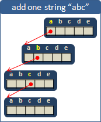
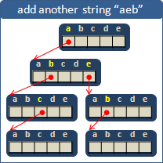
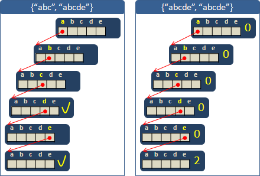
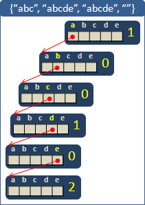
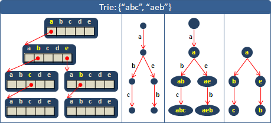
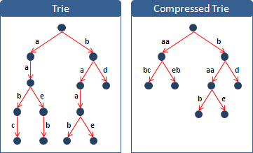
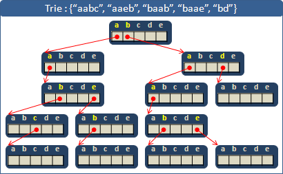
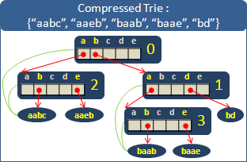

String
程度★ 難度★
String
「字串」由一串字元所構成。例如aaabbbccc、48Dfua@~!0H、m、How are you?等都是字串。有個特例是空字串：一個字元都沒有的字串，通常標記為ф。
字串的長度就是一個字串擁有的字元數目。空字串就是長度為零的字串。
Character
「字元」是字串的基本單元，一個字串當中的每個符號皆是字元，例如字串How are you?的字元依序為：H、o、w、 、a、r、e、 、y、o、u、?。字串How are you?的第一個字元為英文字母H，第三個字元為英文字母w，第四個字元為空白符號 ，最後一個字元為問號?。
中文句子的各個文字也都是字元。例如「你好嗎？」的第二個字元是「好」，第四個字元是全形問號「？」。
ASCII Table列出了電腦中基本的128種字元，包括大小寫英文字母、標點符號、阿拉伯數字、數學運算符號、其他雜七雜八的符號等等。
Substring
「子字串」是字串當中的一段字串。例如algo的各個子字串為ф, a, l, g, o, al, lg, go, alg, lgo, algo。
Prefix
「前綴」。一個字串的開頭幾個字元所構成的子字串（砍去末端幾個字元），為原字串的前綴。例如taiwan的各個前綴是ф, t, ta, tai, taiw, taiwa, taiwan這七個前綴，ф是指空字串。
Suffix
「後綴」。一個字串的末端幾個字元所構成的子字串（砍去開頭幾個字元），為原字串的後綴。例如taiwan的各個後綴是ф, n, an, wan, iwan, aiwan, taiwan這七個後綴，ф是指空字串。
Sequence（String）
「數列」由一串數字所構成。例如1, 2, 3, -1, 99、0, 0, 0, 0、1, 1, 2, 3, 5, 8, ...等都是數列。
字串學當中，習慣譯作「序列」而不是「數列」，習慣討論有限長度的數列，習慣把數列當作字串。
字串與數列唯一的差異在於：字串裡面的字元，是有限多種；數列裡面的數字，有無限多種。屏除這項差異之後，字串與數列是完全相同的，字串可以視作數列、數列可以視作字串。
Subsequence
「子序列」是字串當中由左到右抽取字元所構成的字串。例如algo的各個子序列為ф, a, l, g, o, al, ag, ao, lg, lo, go, alg, alo, ago, lgo, algo。
String資料結構: Array
程度★ 難度★
使用Array儲存一個字串
把字元依序填入陣列，最後用個特殊符號標記字串結尾。
要不然也可以記錄最後一個字元的索引值，這樣就不用加特殊符號。紀錄字串長度也是可以的，數值比前者多一。
缺點是插入字串比較慢，需要搬動插入點之後的所有字元。
String資料結構: Rope
程度★ 難度★★
Rope
【待補文字】
a balanced binary tree whose external node has characters. string concatenation: O(1) string indexing: O(logN) get substring: string indexing + string anti-concatenation = O(logN) string traversal: O(N)
可以直接使用STL的string。
大量String資料結構: Array / Binary Search Tree
程度★ 難度★
Dictionary
儲存大量字串的資料結構，有人通稱為Dictionary。就好比擁有即時排序功能的資料結構，有人通稱為Priority Queue。
這些泛稱凸顯的是資料結構的功能。有了這樣的泛稱，當遇到的問題隱含著字典的概念，就能直覺聯想到Dictionary資料結構，而不會被Array、BST這種不直覺的名稱困住了思考。
Array
一些經典的資料結構就可以直接儲存大量字串了，例如陣列。
Binary Search Tree
當然二元搜尋樹也行，一個節點儲存一個字串。
UVa 148 156 245 642 630 10295 10282 10686 10896 429 10150
大量String資料結構: Trie
程度★ 難度★★★
Trie【翻譯成「櫥」似乎不錯】
儲存大量字串的資料結構，可以想作是一部字典。Trie是一棵特別的樹，每一層的節點以indexing的方式依序紀錄字串的各個字元。一棵Trie可以想作是二維的indexing。
舉一個簡單的例子。假設字串中的字母只有abcde五種。現在要儲存abc這個字串：
由樹根往下，每一層的節點依序對應到字串中每一個字元。多出來的樹葉，可以想成是類似於'\0'的東西。現在再儲存aeb這個字串：
有相同開頭的字串，就會歸類在一起。這種儲存字串的方式，與查字典的模式非常相像，可以減低檢索單字的困難度。相信各位對Trie的儲存模式已經駕輕就熟了。
設計Trie的節點
ASCII一共有128個不同的字元，所以一個節點只需要一條128格的陣列就可以了。
如果遇到abc和abcde這種一個字串是另一個字串的字首的例子，就無法輕易的以樹葉來判斷字串結束了沒。所以必須再用一個變數來記錄：從樹根到目前的節點是不是已經形成了一個字串。
如果遇到abcde和abcde這種相同字串一樣的例子，則可以用一個變數進行累計。
特例：空字串
值得一提的是，一棵Trie可以儲存空字串、空字串可以存入一棵Trie。
Trie的節點
增加一個字串
時間複雜度是O(S)，其中S是字串的長度。
尋找一個字串（判斷字串存不存在）
時間複雜度是O(S)，其中S是字串的長度。
依照順序印出所有字串
使用遞迴走訪每個節點。簡單來說就是DFS。時間複雜度等同於Trie上的節點個數。
釋放記憶體空間
寫了new而不寫delete是大逆不道的事情！一定要記得寫！
結論
Trie的優點就是處理速度奇快無比，字串有多少字元，就花多少時間，到達了速度的極限；缺點就是耗費大量記憶體，陣列中會有許多空格，樹上也會有許多空樹葉。各位有興趣的話可以數數看一個節點用了多少byte的記憶體，然後再數一數一棵Trie有多少個節點，粗估一下一棵Trie所需要的記憶體空間。
Trie的幾種圖示法
UVa 902 10226 10391 10745
延伸閱讀：Compressed Trie
去掉沒有分岔、連成一直線的節點。每個節點增加一個數字，紀錄是第幾個字元開始分岔。
去掉節點之後，字串資訊不完整，只好在樹葉裡儲存完整字串。每個節點增加一個指標，紀錄要參考哪一個葉子的字串開頭。
 大量String資料結構: Ternary Search Tree
程度★ 難度★★★
Ternary Search Tree
【待補文字】
a ternary tree whose every node has 1 character. left-child: lexi.-smaller string, original index. right-child: lexi.-larger string, original index. mid-child: next character of current string, index + 1. a ternary search tree is equivalent to 'a binary tree of strings.' it's just a better presentation.